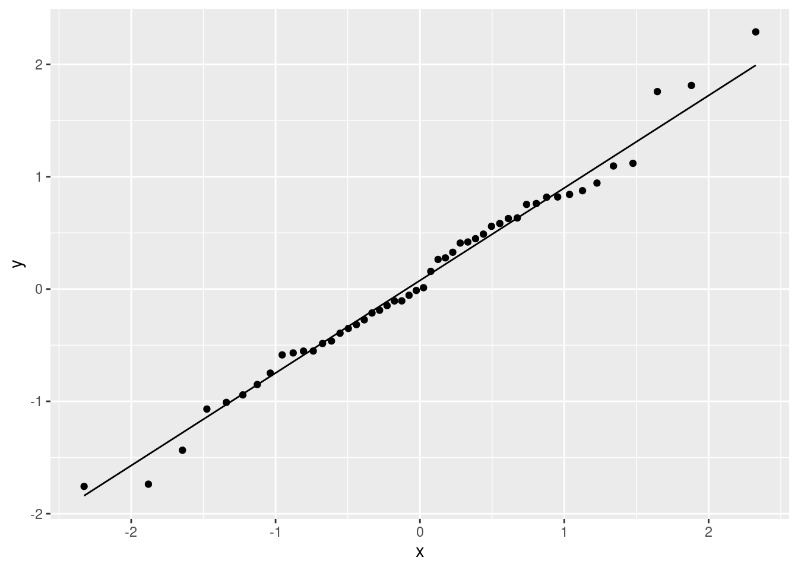
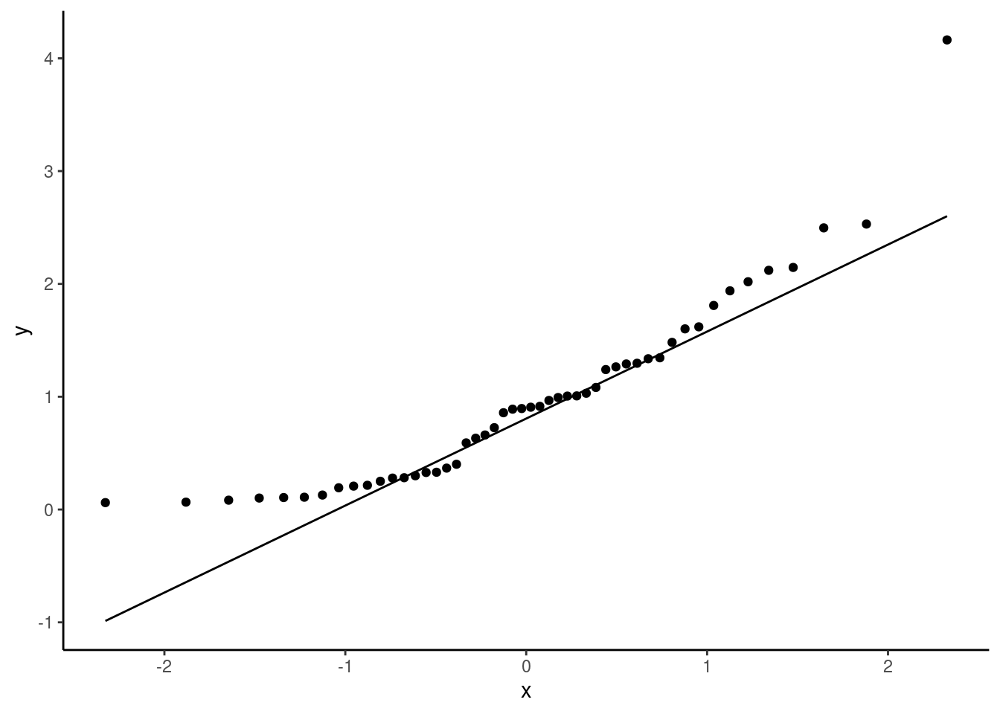
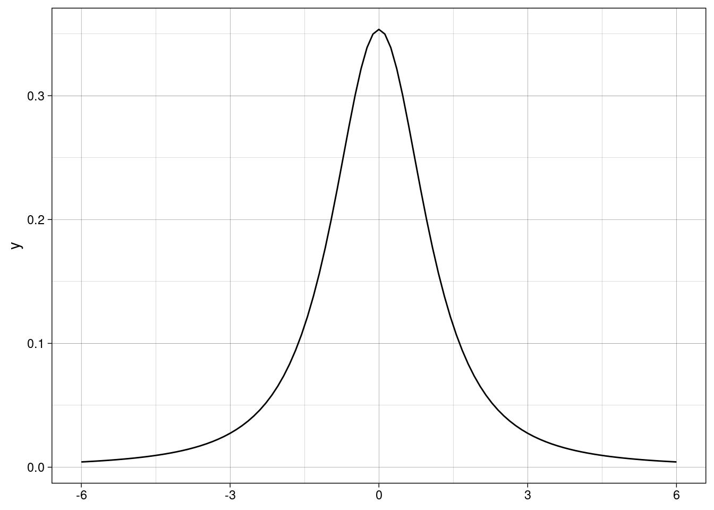
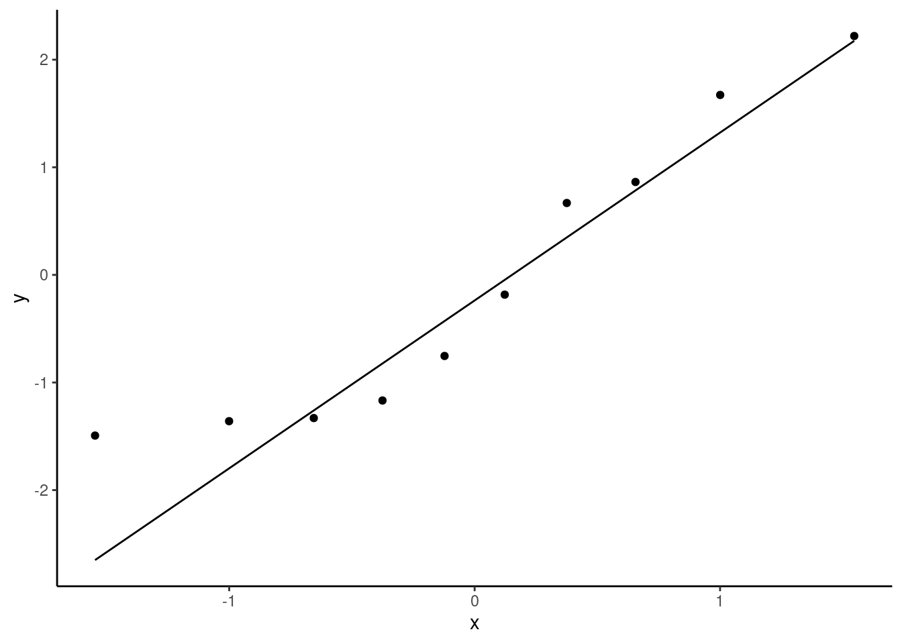

Normal Quantile-Quantile Plots
Companion R Code for JB Statistics Video Lesson
Created by Jill E. Thomley
Sunday, September 26, 2021 @ 05:11 PM
Packages Used
library(tidyverse)
library(readr)
library(kableExtra)Example 1: Sample of 9 Data Points
Create the Sample and Quantiles
The Sample
The basic example contains nine data points from an unknown population.
(sample <- c(3.89, 4.75, 4.75, 5.20, 5.78, 5.80, 6.33, 7.21, 7.90))[1] 3.89 4.75 4.75 5.20 5.78 5.80 6.33 7.21 7.90The Quantiles
Find the nine values that split the standard normal distribution into 10 equal areas. That set is known as the deciles (prefix dec = 10, like decade). We want the 10th percentile, the 20th percentile, the 30th percentile, up to the 90th percentile, as shown in the plot in the video.
# standard normal is N(0, 1)
# function qnorm(p, mean, SD)
# long way for illustration
(deciles <- qnorm(c(0.1, 0.2, 0.3, 0.4, 0.5, 0.6, 0.7, 0.8, 0.9), 0, 1))[1] -1.2815516 -0.8416212 -0.5244005 -0.2533471 0.0000000 0.2533471 0.5244005
[8] 0.8416212 1.2815516# this is a better coding strategy
# it scales up for larger problems
decile <- qnorm(seq(from = 0.1, to = 0.9, by = 0.1), 0, 1)As a Tibble
When using ggplot2 it is often better to create a dataset versus stand-alone vectors.
plotdata1 <- tibble(
sample = c(3.89, 4.75, 4.75, 5.20, 5.78, 5.80, 6.33, 7.21, 7.90),
deciles = qnorm(seq(from = 0.1, to = 0.9, by = 0.1), 0, 1)
)
plotdata1 %>%
kable(digits = 2) %>%
kable_styling(
full_width = FALSE,
position = "left",
font_size = 14
)| sample | deciles |
|---|---|
| 3.89 | -1.28 |
| 4.75 | -0.84 |
| 4.75 | -0.52 |
| 5.20 | -0.25 |
| 5.78 | 0.00 |
| 5.80 | 0.25 |
| 6.33 | 0.52 |
| 7.21 | 0.84 |
| 7.90 | 1.28 |
Create a Plot of Sample vs. Quantiles
If the data come from a normal distribution, then the theoretical and sample quantiles should have a similar spacing (not perfect, because it’s a sample). When plotted against one another, they should make approximately a straight line.
ggplot(plotdata1, aes(x = deciles, y = sample)) +
geom_point() +
labs(
x = "Theretical Quantiles",
y = "Sample Quantiles"
) +
theme_linedraw()Find the ith Order Statistic
In general, the ith ordered value (or order statistic) is plotted against the \(\frac{i}{n + 1}\) quantile of the standard normal distribution. In other words, for \(n\) values, we split the normal distribution into \(n + 1\) equal chunks and find the quantile (percentile) values.
n <- 9
plotdata1 %>%
mutate(
point_number = 1:n,
order_statistic = point_number / (n + 1)
)# A tibble: 9 × 4
sample deciles point_number order_statistic
<dbl> <dbl> <int> <dbl>
1 3.89 -1.28 1 0.1
2 4.75 -0.842 2 0.2
3 4.75 -0.524 3 0.3
4 5.2 -0.253 4 0.4
5 5.78 0 5 0.5
6 5.8 0.253 6 0.6
7 6.33 0.524 7 0.7
8 7.21 0.842 8 0.8
9 7.9 1.28 9 0.9A General Tidyverse Algorithm
We can combine all our steps above to program a general algorith using tidyverse tools. If you have an existing dataset, you use that in place of creating a tibble. Make sure to filter() to eliminate any rows that have missing values in the variable you plan to plot, otherwise your \(n\) will be incorrect.
plotdata2 <- tibble(sample = c(3.89, 4.75, 4.75, 5.20, 5.78, 5.80, 6.33, 7.21, 7.90)) %>%
mutate(
point_number = row_number(),
order_statistic = point_number / (n() + 1),
quantile_value = qnorm(order_statistic, 0, 1)
)
plotdata2# A tibble: 9 × 4
sample point_number order_statistic quantile_value
<dbl> <int> <dbl> <dbl>
1 3.89 1 0.1 -1.28
2 4.75 2 0.2 -0.842
3 4.75 3 0.3 -0.524
4 5.2 4 0.4 -0.253
5 5.78 5 0.5 0
6 5.8 6 0.6 0.253
7 6.33 7 0.7 0.524
8 7.21 8 0.8 0.842
9 7.9 9 0.9 1.28 Using Statistical Software
Sample from a Normal Population
normal_sample <- tibble(x = rnorm(50, 0, 1))
ggplot(normal_sample, aes(sample = x)) +
geom_qq() +
geom_qq_line()
Sample from a Uniform Population
The continuous uniform distribution is platykurtic, which means it has a flatter peak and thinner tails than the normal distribution.
# X ~ Unif(-3, +3) covers about the same range
# of values on the x-axis as a standard normal
uniform_sample <- tibble(x = runif(50, -3, +3))
ggplot(uniform_sample, aes(sample = x)) +
geom_qq() +
geom_qq_line()Plotting Uniform vs. Normal Curves
ggplot() +
stat_function(
fun = dunif,
args = list(-3, 3),
color = "blue"
) +
stat_function(
fun = dnorm,
args = list(0, 1),
color = "orange"
) +
scale_x_continuous(limits = c(-3, +3)) +
theme_linedraw()Sample from an Exponential Population
The exponential distribution is strongly right-skewed.
# x ~ Exp(1)
exponential_sample <- tibble(x = rexp(50, 1))
# plot of the population
ggplot() +
stat_function(
fun = dexp,
args = list(1)
) +
scale_x_continuous(limits = c(0, 6)) +
theme_linedraw()
ggplot(exponential_sample, aes(sample = x)) +
geom_qq() +
geom_qq_line() +
theme_classic()
Sample from an Student’s t Population
The Student’s t distribution is leptokurtic, which means it has a taller peak and thicker tails than the normal distribution when the parameter is small. However, the t converges to the standard normal distribution as the parameter approaches \(\infty\). Notice the data curves in the opposite direction from the uniform distribution on a QQ plot.
# X ~ t(2)
t_sample <- tibble(x = rt(50, 2))
# plot of the population
ggplot() +
stat_function(
fun = dt,
args = list(2)
) +
scale_x_continuous(limits = c(-6, 6)) +
theme_linedraw()
# formatted plot
ggplot(t_sample, aes(sample = x)) +
geom_qq() +
geom_qq_line() +
theme_classic()QQ Plots Sampling Variability
Try several samples of the same size to observe how the plot can vary from sample to sample. Also try different sample size to see how that affects the plot.
# choose your sample size
n <- 10
# sample generation is nested in the plot code
ggplot(
tibble(x = rnorm(n, 0, 1)),
aes(sample = x)
) +
geom_qq() +
geom_qq_line() +
theme_classic()
# this code takes 9 samples of the indicated size
# choose your sample size
n <- 10
norm_samples <- tibble(
sample_values = rnorm(9 * n, 0, 1),
sample_number = rep(1:9, each = n)
)
ggplot(norm_samples, aes(sample = sample_values)) +
geom_qq() +
geom_qq_line() +
facet_wrap(. ~ sample_number) +
theme_classic()sessionInfo()R version 3.6.0 (2019-04-26)
Platform: x86_64-redhat-linux-gnu (64-bit)
Running under: Red Hat Enterprise Linux
Matrix products: default
BLAS/LAPACK: /usr/lib64/R/lib/libRblas.so
locale:
[1] LC_CTYPE=en_US.UTF-8 LC_NUMERIC=C
[3] LC_TIME=en_US.UTF-8 LC_COLLATE=en_US.UTF-8
[5] LC_MONETARY=en_US.UTF-8 LC_MESSAGES=en_US.UTF-8
[7] LC_PAPER=en_US.UTF-8 LC_NAME=C
[9] LC_ADDRESS=C LC_TELEPHONE=C
[11] LC_MEASUREMENT=en_US.UTF-8 LC_IDENTIFICATION=C
attached base packages:
[1] stats graphics grDevices utils datasets methods base
other attached packages:
[1] kableExtra_1.3.4 forcats_0.5.1 stringr_1.4.0 dplyr_1.0.7
[5] purrr_0.3.4 readr_2.0.1 tidyr_1.1.3 tibble_3.1.4
[9] ggplot2_3.3.5 tidyverse_1.3.1
loaded via a namespace (and not attached):
[1] Rcpp_1.0.7 svglite_2.0.0 lubridate_1.7.10 assertthat_0.2.1
[5] digest_0.6.27 utf8_1.2.2 R6_2.5.1 cellranger_1.1.0
[9] backports_1.2.1 reprex_2.0.1 evaluate_0.14 httr_1.4.2
[13] highr_0.9 pillar_1.6.2 rlang_0.4.11 readxl_1.3.1
[17] rstudioapi_0.13 jquerylib_0.1.4 rmarkdown_2.11 labeling_0.4.2
[21] webshot_0.5.2 munsell_0.5.0 broom_0.7.9 compiler_3.6.0
[25] modelr_0.1.8 xfun_0.26 pkgconfig_2.0.3 systemfonts_1.0.2
[29] htmltools_0.5.2 tidyselect_1.1.1 fansi_0.5.0 viridisLite_0.4.0
[33] crayon_1.4.1 tzdb_0.1.2 dbplyr_2.1.1 withr_2.4.2
[37] grid_3.6.0 jsonlite_1.7.2 gtable_0.3.0 lifecycle_1.0.0
[41] DBI_1.1.1 magrittr_2.0.1 scales_1.1.1 cli_3.0.1
[45] stringi_1.7.4 farver_2.1.0 fs_1.5.0 xml2_1.3.2
[49] bslib_0.3.0 ellipsis_0.3.2 generics_0.1.0 vctrs_0.3.8
[53] tools_3.6.0 glue_1.4.2 hms_1.1.0 fastmap_1.1.0
[57] yaml_2.2.1 colorspace_2.0-2 rvest_1.0.1 knitr_1.34
[61] haven_2.4.3 sass_0.4.0